Every picture below is the real popup in the real app, photographed by driving the manager panel (table 17 on the backup stack, 17/9/2026, 1:31:48 pm). Nothing is drawn by hand.
What it is keeping to: one dish per line, in the menu's own order · the course is only the coloured spine (no words, no chip strip) · the same dish from two tickets is one line with the breakdown inside it · everything served sinks to the bottom · the party sits in the head beside the table's mark · serve and ✎ on every line · an incoming ticket can be read dish by dish before it is accepted · nothing scrolls, on a laptop or a phone.
Signed in already. Tap table {{TABLE}} or 29 — both have a full bill on them. Everything works: accept the waiting ticket, serve a dish, open a line, ✎ it, flip to KOT-wise, print.
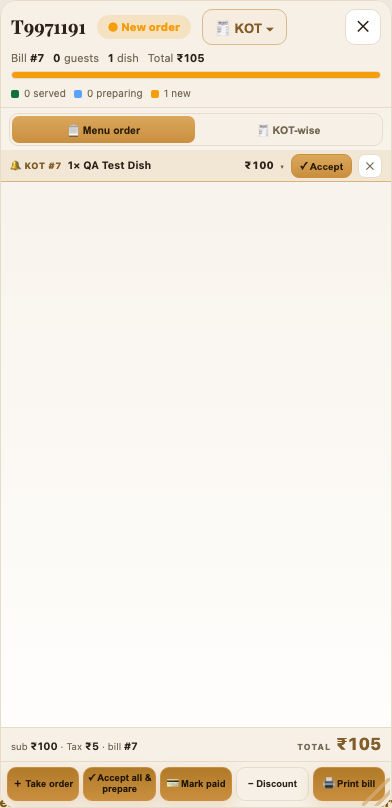
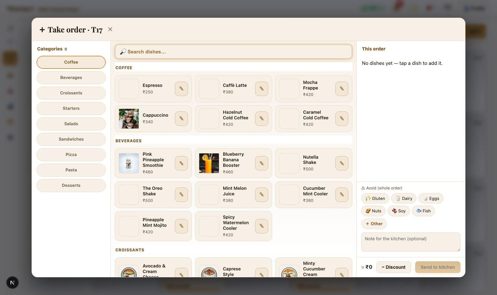
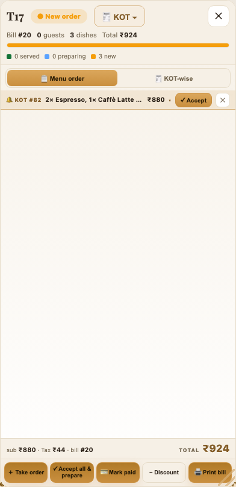
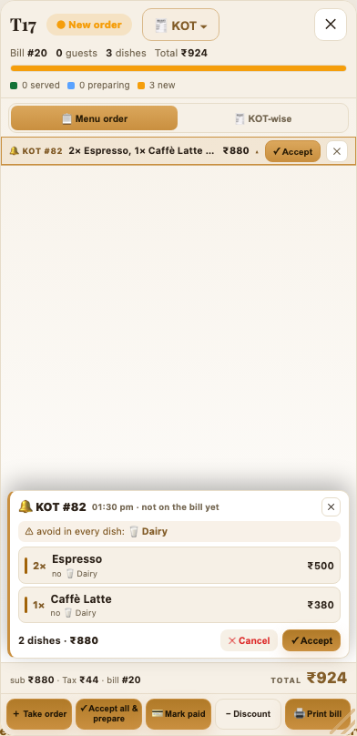
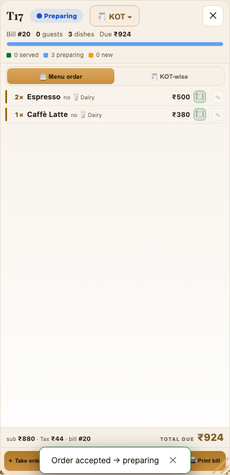
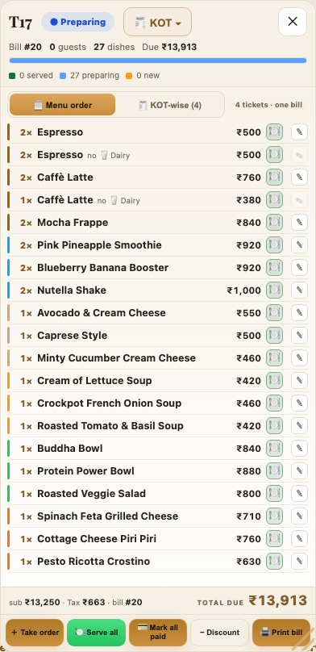
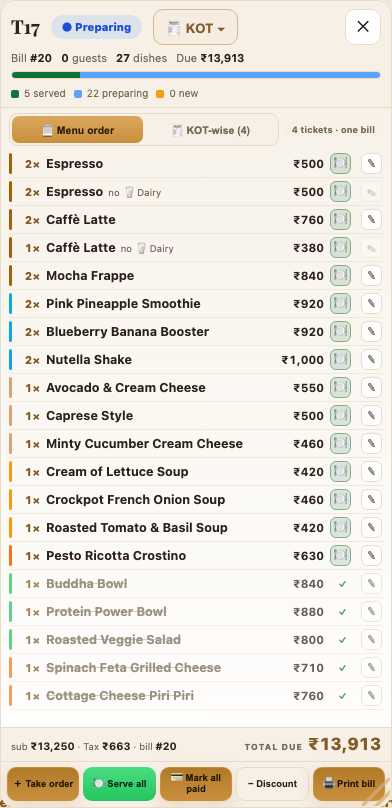
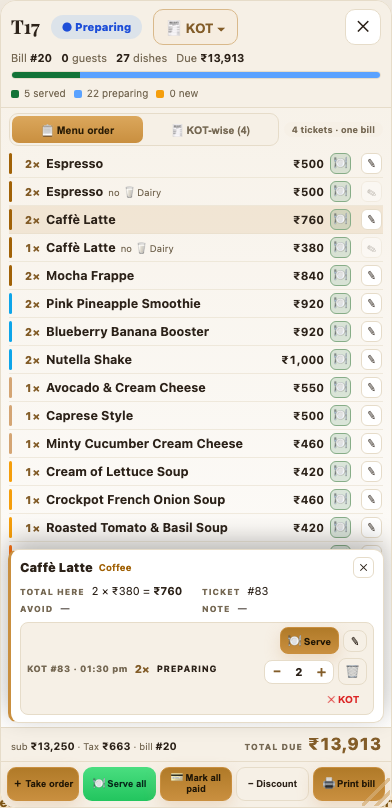
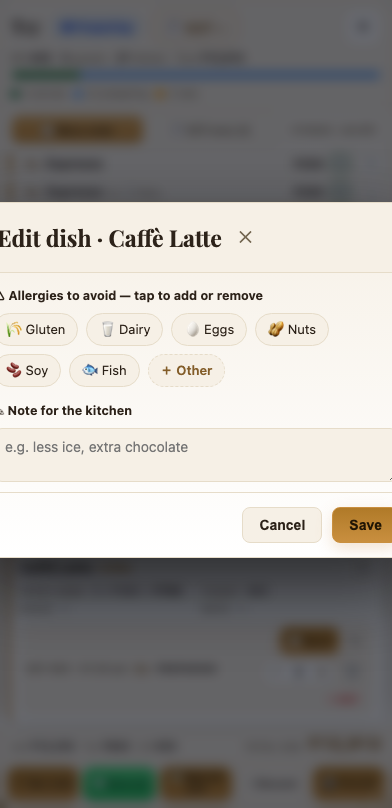
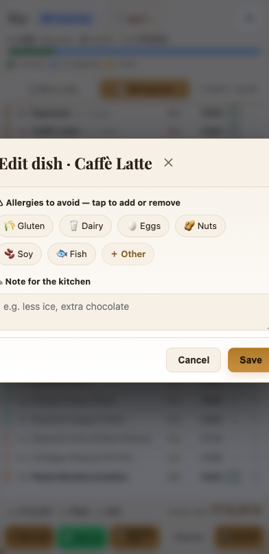
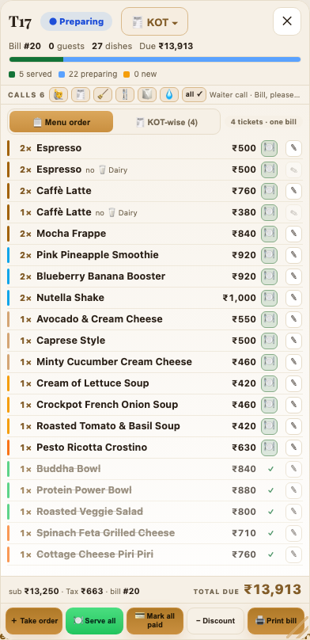
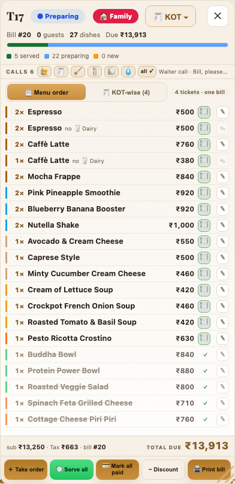
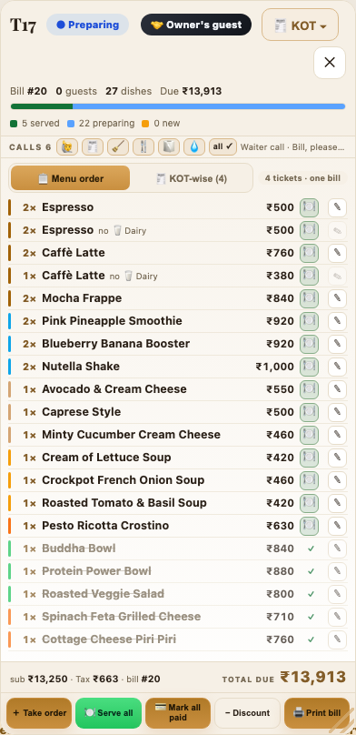
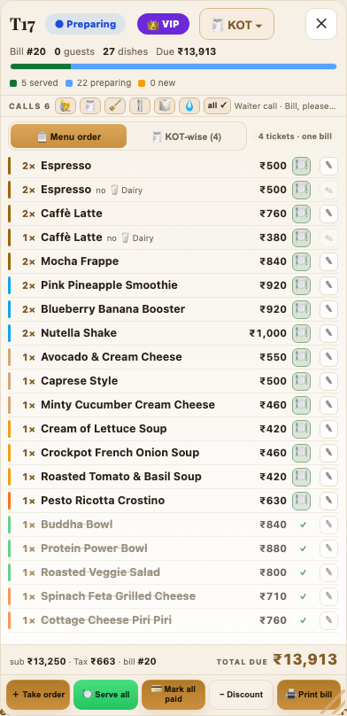
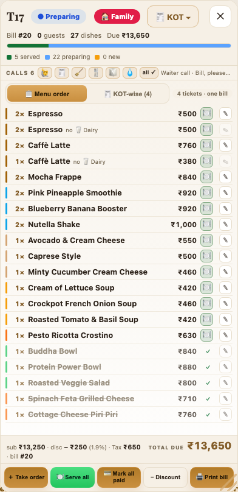
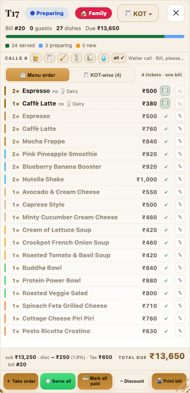
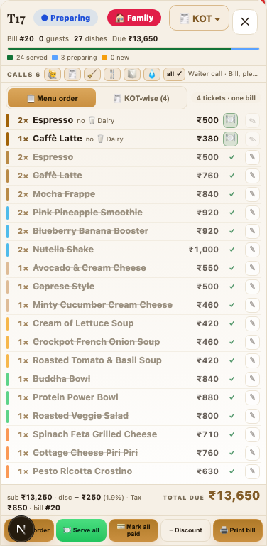
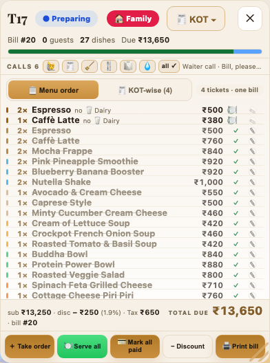